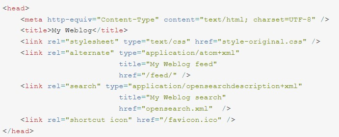
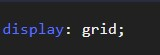

En la presente pagina se desarrllan los conetenidos para la fase 3 sobre los temas de Etiquetas semántica y CSS Grid
Una de las novedades que hemos mencionado anteriormente son las etiquetas que se han introducido en HTML5. Existen más de 30 nuevas etiquetas semánticas que pueden ser utilizadas en nuestras páginas estáticas. Estas nuevas etiquetas se podrían clasificar en dos grupos:
Etiquetas que extienden a las actuales, como video, audio o canvas, y que además añaden nuevas funcionalidades a los documentos HTML, que podemos controlar desde JavaScript y
etiquetas que componen la web semántica, es decir, que no proponen nuevas funcionalidades pero sirven para estructurar sitios web, y añadir un significado concreto, más allá de las etiquetas generales como div.
La creación de esquemas y estructuras de posicionamiento para elementos en una página web, ha sido un desafío constante para desarrolladores de todas épocas. Desde los primeros pasos de CSS, se observó la necesidad de introducir un módulo de grilla para poder crear esquemas como los que veíamos en las revistas.
Sin embargo, no fue hasta 2012 cuando en Microsoft, por primera vez se implementó un módulo como el que hoy tenemos para manejo de filas y columnas en CSS Grid, Phil Cupp fue el pionero de este trabajo, él presentó la especificación que dio paso a CSS Grid.
Cabe recalcar que la especificación que presentó Phil Cupp y que venía implementada en Internet Explorer, no es la misma que hoy usamos, ni tampoco es la primera intención de implementar un sistema de grilla en CSS, sin embargo, esta especificación fue la primera en ser implementada en un navegador, sí, Internet Explorer fue el primer navegador con una implementación de grilla.
